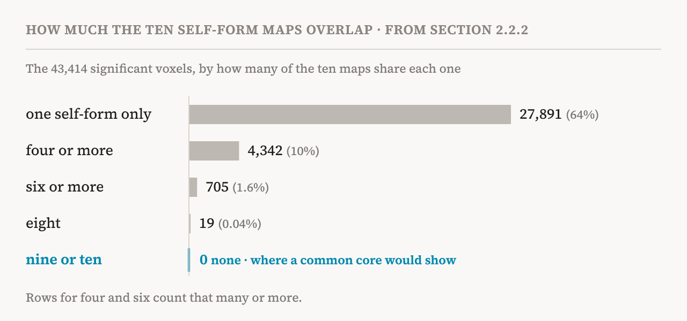
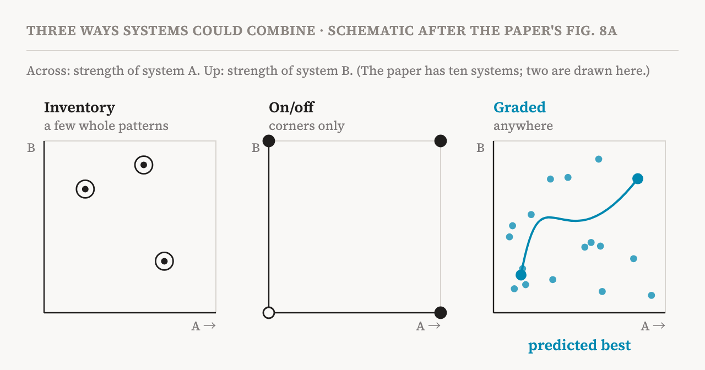

On 16 November 2026, Jeremy Skipper and colleagues at the UCL Centre for Consciousness Research posted a preprint on bioRxiv titled "'The self' as shifting coalitions of brain systems in a continuous configuration space". It has eight authors and, as a preprint, has not yet been peer-reviewed.
Two Ways to Lose a Self started from the view that the self is built from bodily signals, and looked at how the insula and the prefrontal cortex handle them. This paper steps back to a more basic question: where in the brain is the self? Its answer is that there is no place reserved for it. Brain systems that also do other work, remembering, sensing the body, evaluating, join forces at strengths that change from one occasion to the next.
One "I", many jobs
Recognising your body as yours, acting on what you meant to do and remembering your past all seem to belong to the same "I". Philosophy has two ways to explain that unity. One says there is a single subject of experience that persists. The other says "self" is a name for many bodily and mental processes linked by causes such as memory and intention. Derek Parfit called the first ego theories and the second bundle theories.
The bundle view is plainest in the chariot dialogue of the Buddhist Questions of King Milinda. The monk Nāgasena asks the king whether a chariot is its wheels, its axle or its frame. No part alone is the chariot, and there is no further chariot besides the parts. "Chariot" names the way the parts are put together, and "person", Nāgasena says, likewise names an arrangement of bodily and mental parts.
The authors call everything the brain does with information about oneself self-related processing, and each family of related activities a self-form.
The candidates for a core
Neuroscience has two favourite candidates for the self's core. One is the strip of regions along the brain's midline, the medial prefrontal cortex and the posterior cingulate cortex, which light up again and again when people evaluate themselves or recall their own memories. The other is the insula, which one meta-analysis found at every level of the self, from sensing the body's inner state through recognising one's face and body to thinking about oneself.
Yet even earlier meta-analyses did not find these candidates in every self-form. One comparing body ownership with agency found the two sharing only part of the left middle insula, with no common midline activity. And both candidates do much besides. Midline regions also serve imagining the future and understanding other minds; the insula also serves attention and emotion. A region that keeps turning up in experiments on the self need not be doing anything specific to the self.
A map from 912 papers
No single experiment covers every self-form, so the authors pooled the neuroimaging literature. A search of titles and abstracts for self-related terms found 2,068 candidate records. Three families of language models judged whether each record really studied self-related processing, and the 1,023 that all three accepted were kept. Removing 108 with ineligible designs, such as studies of brain structure alone or reviews, left 912 publications, 2,075 analyses and 31,991 reported brain locations.
The publications were then grouped by how similar the wording of their abstracts was, without looking at the reported locations and without fixing the number of groups in advance. The answer that came up most often was ten groups, which the authors treat as ten self-forms. Four concern remembering or evaluating oneself: autobiographical memory, negative self-reference, self-appraisal and trait evaluation, which the authors call the reflective self-forms. The other six are ownership and agency, interoception, monitoring and insight, self–other distinction, face and voice recognition, and body image and identity. For each self-form the authors then mapped where its reported locations recur more often than chance.
No core
The ten maps put their weight in different places. Autobiographical memory leaned on the hippocampus and precuneus, ownership and agency on parietal and motor regions, interoception on the insula.
What, then, was the midline core that earlier syntheses found? The authors pooled every publication and redrew the map. The pooled map covered 22.1% of the brain, about seven times the average single self-form's map (3.2%), and it resembled the reflective self-forms most, since they supplied more than half of the publications. On this reading, the midline that earlier studies took for the self's common core may have been mostly the regions used for remembering and evaluating oneself, averaged across everything else.
Overlaying the maps makes the point sharper. No voxel, the small cube that brain images are made of, was significant in all ten maps, and none in nine. Of the 43,414 significant voxels, 64% belonged to one self-form only, 10% to four or more and 1.6% to six or more. The most shared were 19 voxels in eight maps, and which two self-forms were missing changed from place to place.

The midline and the insula did not vanish. Every map reached the medial prefrontal cortex and the anterior insula, but to very different extents: from 10 medial prefrontal voxels for body image and identity to 994 for autobiographical memory, and from 33 anterior insular voxels for body image and identity to 841 for interoception. They visit the same neighbourhood, but different houses, for different lengths of time.
Where, then, is the information that tells the self-forms apart? The authors trained a classifier to guess a publication's self-form from the regions it reported. With the whole brain it reached 22.6%, more than twice the 10% of guessing. The best single region reached only 12.6%, and the best single division of the brain 16.2%. Removing the 200 most predictive regions and retraining still left 22.0%, about the same as removing 200 regions at random (22.2%). The information is not concentrated in a few places; it is spread across the brain.
The authors set three conditions for a core: it would have to appear in every self-form, do work specific to the self, and carry what distinguishes the self-forms. The overlap fails the first, and the classifier fails the third. The next result answers the second.
Systems that also do other work
The authors compared the ten maps with 50 maps of research topics that have nothing to do with the self, each summarising the imaging literature on one topic. Every self-form resembled maps of general functions, and its closest match was a topic of related content. Autobiographical memory resembled memory retrieval (r = 0.508), ownership and agency resembled watching others act (r = 0.541), and interoception resembled pain and bodily sensation (r = 0.392); r is a correlation, where 1 would mean identical maps. The systems the self draws on are not reserved for it but reused for other work, what neuroscience calls neural reuse. That fails the second condition.
Context matters too. Publications in the same self-form reported different regions, and part of that difference could be predicted from the tasks, stimuli and participants their abstracts describe, though the effect was small. In one study, priming bicultural participants with individualistic or collectivistic values reversed the order of their midline responses.
So does the link to consciousness. The authors' companion meta-analysis sorted consciousness research into seven groupings. Autobiographical memory resembled awareness in memory and learning more than conscious perception and attention (0.636 against 0.363), while ownership and agency showed the reverse (0.398 against 0.666). The strongest pairing was interoception with interoceptive awareness and pain experience (0.691). Self and consciousness do not always move as one block.
Mixing at changing strengths
The last question is how the systems combine. The authors pitted three accounts against each other. In the inventory account, the brain keeps a few complete patterns and reuses one of them whole. In the on/off account, systems combine freely, but each contributes at a fixed strength or not at all. In the graded account, each system's strength can take any value.
Each model was given the regions a held-out publication reported in one hemisphere and asked to predict the other. The graded model won, cutting the error by 2.5% against the inventory model and 2.6% against the on/off model. The best graded model had ten components, so a state of the self becomes a configuration of ten strengths, and the continuous space those configurations occupy is the configuration space.
A mixing desk with ten faders makes the idea concrete. Push the memory fader up and the body fader a little, and you get something close to autobiographical memory; change the balance and the sound changes by degrees. The paper's own example: recalling a conversation with embarrassment brings in a lot of bodily feeling and evaluation, while recalling it to report what was said leans on memory. The familiar self-forms are fader settings we use often, and everything in between is possible too.

Why the self still feels like one
If there is no core, why do we feel like one continuing self? The authors offer two reasons. First, some members keep returning. Every map reached the midline and the insula, so the same systems can join many configurations without any one location joining all of them; continuity needs recurrence, not a part reserved for the self. Second, there is the name "I". Applying "I" to bodily feelings, memories and actions marks them as belonging to the same person, and that applying is itself one of the recurring activities, so it does not presuppose an owner behind it.
The account leads to predictions. If the systems that place experience in a personal context weaken while those supporting perception keep working, seeing and hearing should go on without seeming to belong to "me". Reports from experienced meditators and from participants given the psychedelic 5-MeO-DMT motivate this prediction, and it meets the experiences in Two Ways to Lose a Self, where the self fades while perception stays intact.
For mental health, the authors predict that wellbeing tracks the ability to enter, stay in and leave configurations as circumstances require. Rumination would then be a failure to leave a self-critical configuration. Meditation could help in two ways: practices that train noticing thoughts as thoughts should make configurations easier to leave, and practices that question identification should loosen identification with any one configuration.
Points to weigh
First, the unit of data is the publication. The analysis pools the locations each paper reported; it does not follow one brain over time. A graded pattern could therefore be a mixture of a few discrete states in different people or at different moments. The authors acknowledge this and propose an experiment comparing the three models on single trials within individuals.
Second, the effects are small. Ten groups beat three by 0.14%, and the graded model beat the others by 2.5–2.6%. These are statistically reliable but small differences, and a classification accuracy of 22.6% is above chance without being high.
Third, absence is hard to show. Papers report only their strongest peaks and maps keep only what passes a threshold, so a weak contribution shared by every self-form could be missed. Activity is also not necessity. One patient with extensive damage to the insula, anterior cingulate and medial prefrontal cortex on both sides kept much of their self-awareness, yet in patients with focal medial prefrontal damage the advantage for remembering self-related information disappeared. Which regions are needed may depend on the ability tested.
Fourth, the self-forms were sorted by the wording of abstracts. Wording also carries methods and patient groups, and two of the categories concern clinical populations. Language models helped screen the publications and name the groups, and no human checked that each contrast isolated self-related processing.
Fifth, the ten components are statistical stand-ins, from one family of models fitted only to the cortex. How they correspond to real brain systems remains to be established.
Read against AI
The paper says nothing about AI, but it sits well beside the question that closed Two Ways to Lose a Self: what, in a model, sits where the self-model sits? After this paper the question changes a little. If even in people there may be no place reserved for the self, then in AI too, rather than searching for one self-model module, we may need to ask which components work together, and at what strengths, when a model talks about itself. Interpretability offers a similar picture. As I wrote in The Superposition Hypothesis, part 8 of AI from the Inside, a concept in a model is often spread across many neurons rather than held in one. Being spread out is not yet the same principle, though; whether the configurations behind a model's talk about itself actually recur is something to check.
“As "chariot" names wheels, axle and frame put together, "I" may name the way brain systems that also do other work come together.”